下村志保美さん コラボ講演会
効率よく生きる人は
「迷う回数」が少ない
岡崎かつひろ
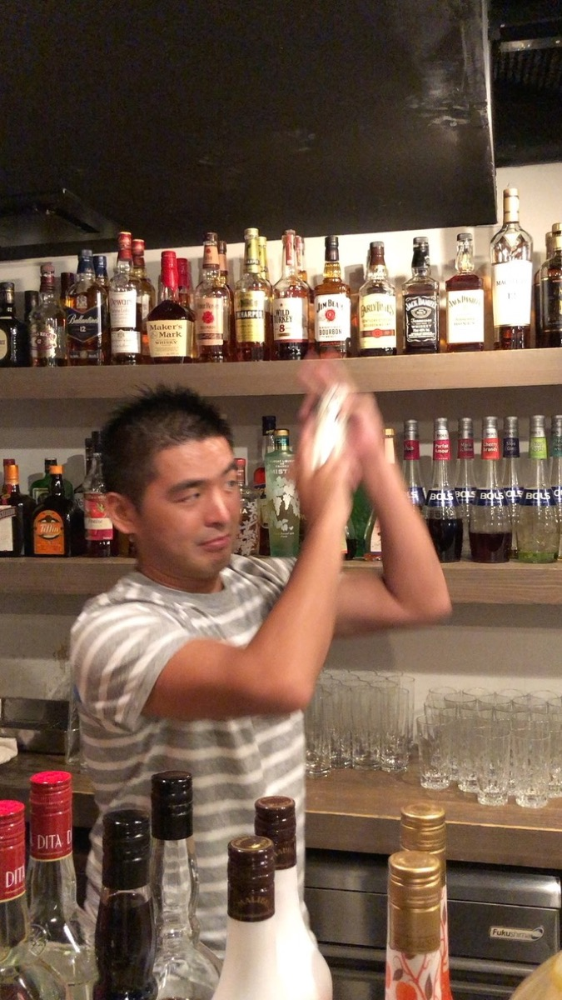
作家・講演家
岡崎かつひろ
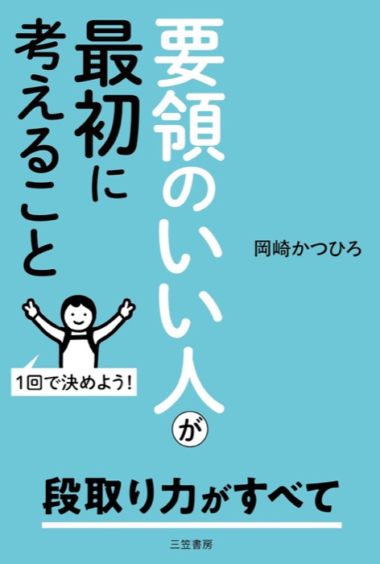
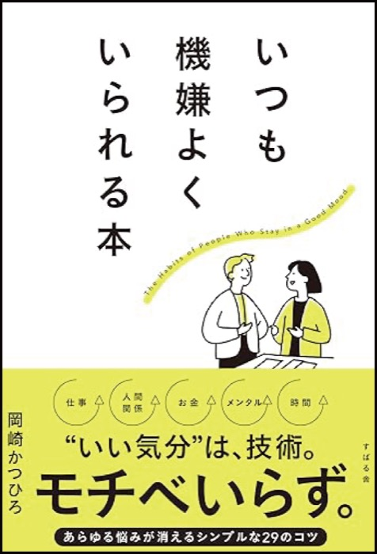
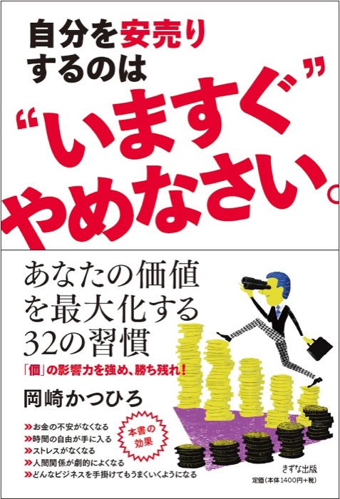
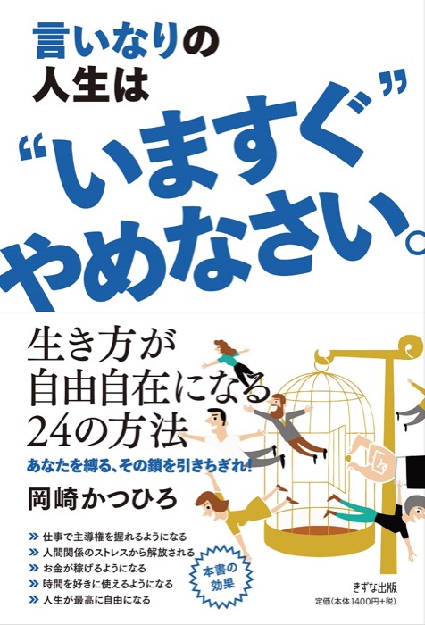
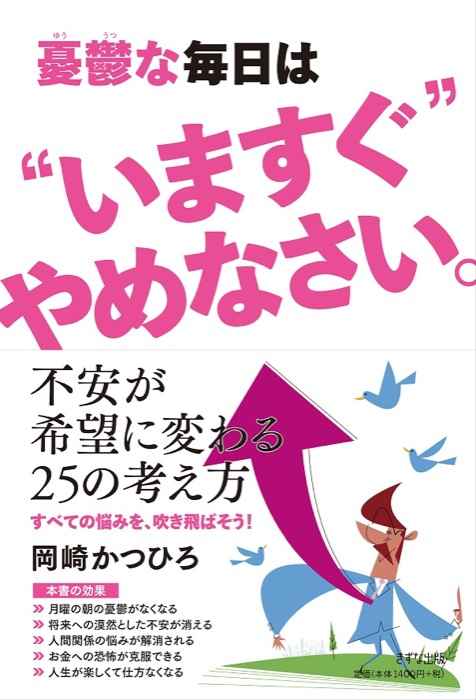
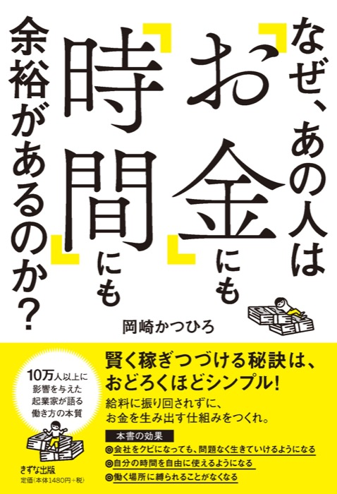
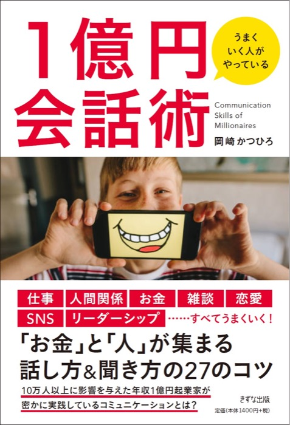
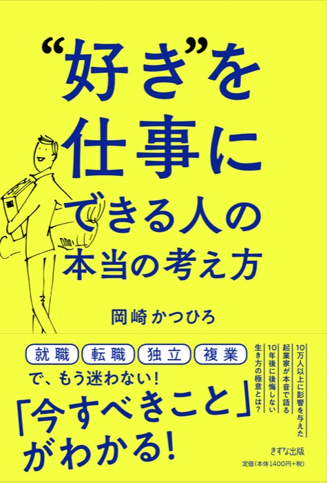
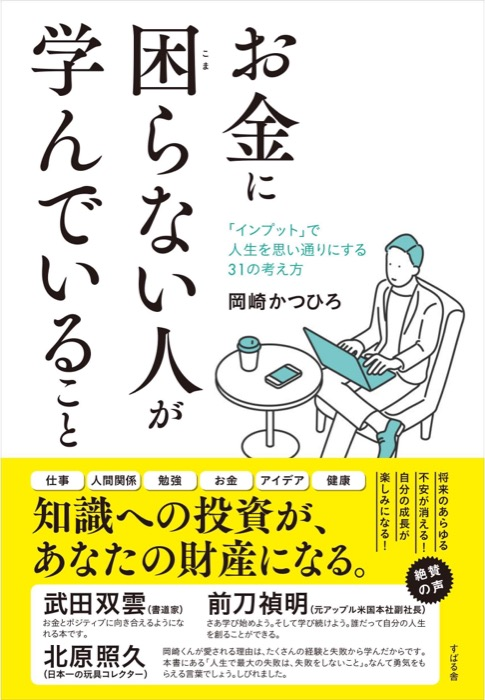
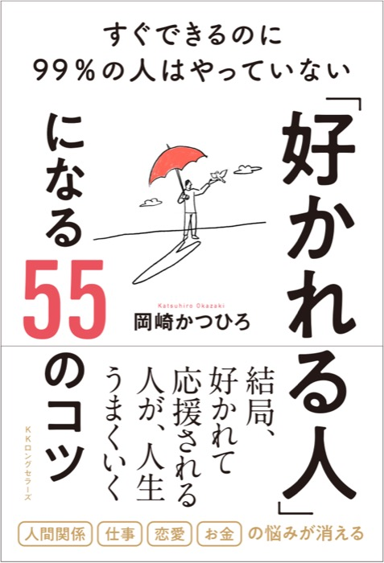
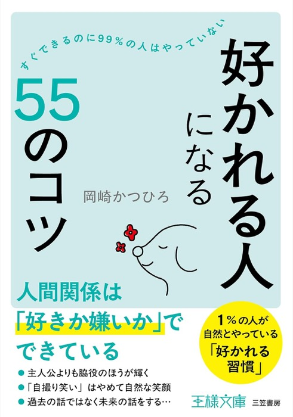
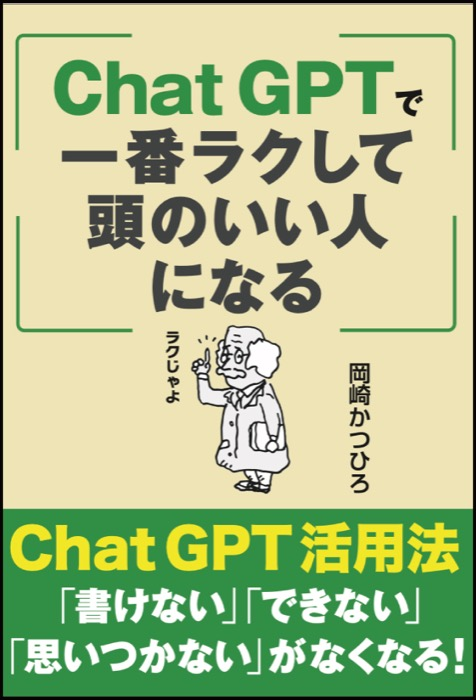
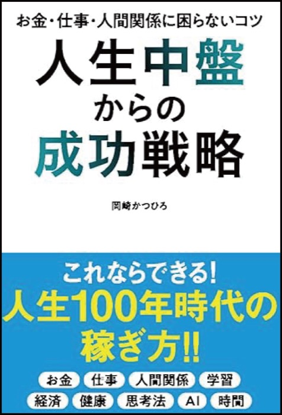
ひとつでも当てはまったら
そんなあなたのために
今日の講演を
させていただきます
🎁 今日のスライドをプレゼント
このスライドを
そのまま差し上げます
LINE公式に、このキーワードを送ってください
① 右のQRで友だち追加
② トークに「下村さん大好き」と送る
岡崎かつひろ LINE公式
1
メンターから
言われた
ひと言
体験談：26歳、独立のときにメンターから聞いた話
人生は
選択の
積み重ね
朝起きてから寝るまで
人は選び続けている
選択には、必ず「基準」がある
今は、選択の積み重ね
未来は、その延長線上
ひとつ質問です
「人生を悪くしてやろう」と
選ぶ人はいますか？
人はいつも、自分にとって良い方を選んでいる
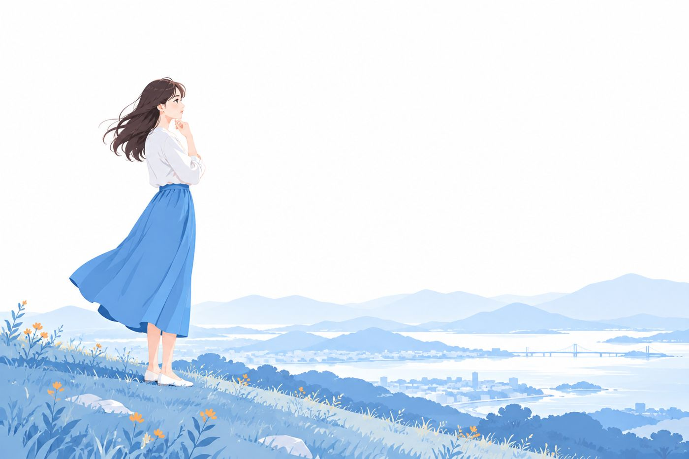
もし今が
最高でない
としたら…
それは
選択の「基準」が
間違っているのかもしれない
2
時間を
奪っているのは
「迷い」
何を着る？
何を食べる？
何からやる？
1日のうちに
小さな迷いがいくつもある
要領のよさは
才能ではなく
技術
迷わない人は
「基準」を持っている
3
何を食べるか
迷ってしまう
「10キロ痩せる」
と決めていたら？
迷わず
カロリーの低いものを選べる
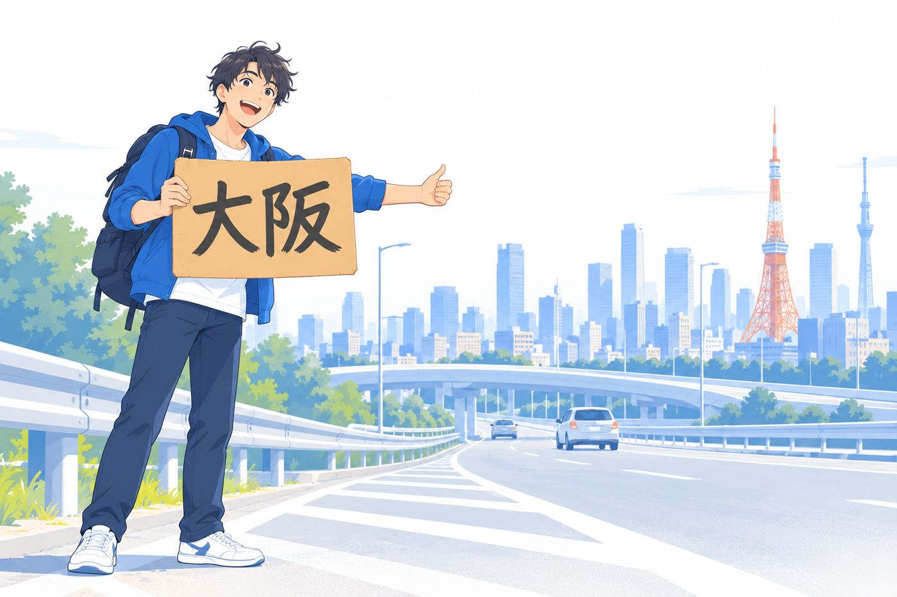
東京から
大阪へ
向かうとき
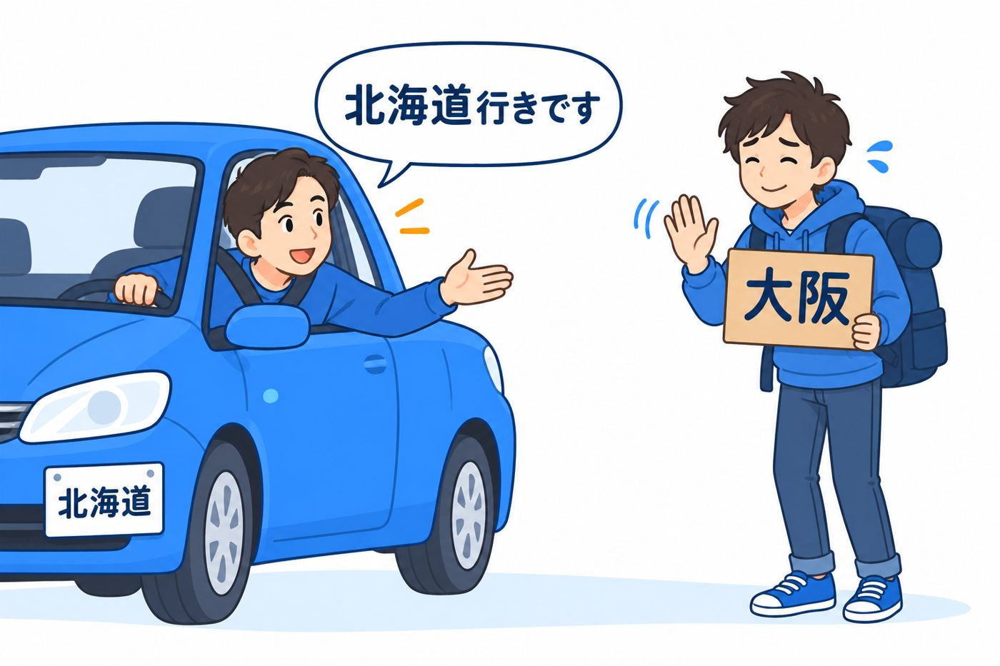
ゴールが明確なとき
人は迷わず
選ぶことができる
ゴールが「基準」になる
4
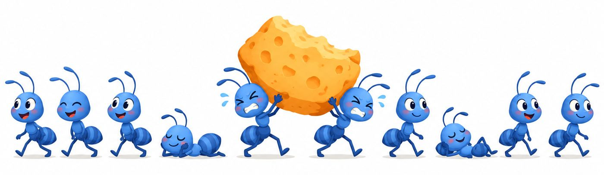
パレートの法則（2：8の法則）
よく働くのは
全体の2割
残りは、ふつうに働くアリと
ほとんど働かないアリ
人生も同じ
効率よく生きるとは
本当に大事な2割に
集中すること
5
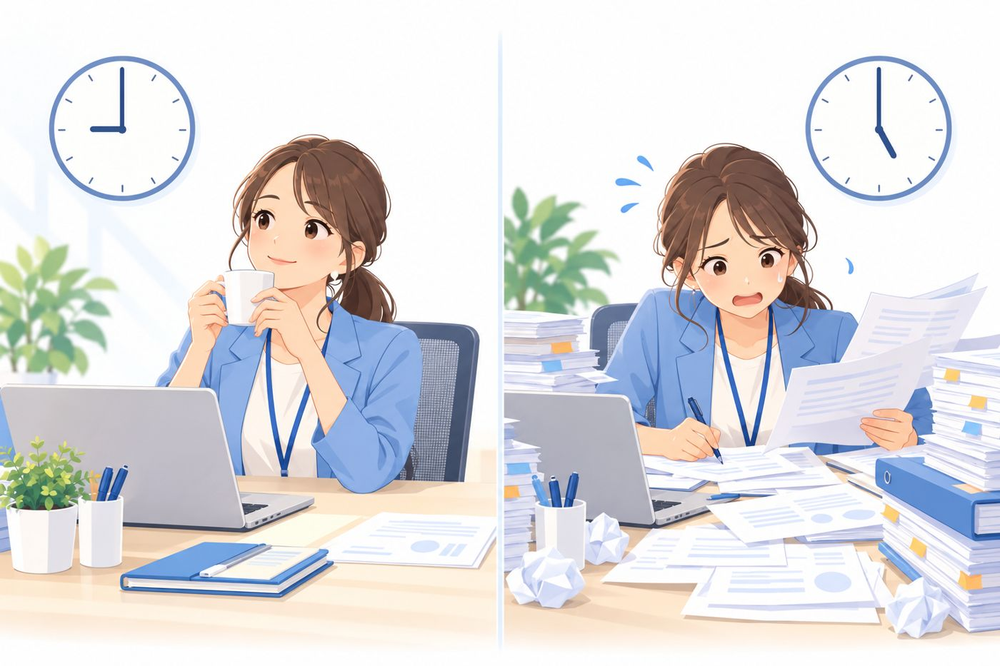
時間の使い方の4つの部屋
大事なのは
第2領域
出典：スティーブン・R・コヴィー『7つの習慣』
「緊急ではないが
重要」は
放っておくと
「緊急」に変わる
例：日報・週報
重要だと
わかっているなら
先に先に
進めておく
6
ひとりで
考えても
ゴールは
なかなか見えない
人の力を
借りる
それがコーチング
自分の基準をつくってきた時間
年間
100日
能力開発のセミナーに通い
自分のゴールと基準をつくってきた
体験談：能力開発セミナーで得たもの
まとめ
ゴールが決まれば
人生は迷わない
🎁 お忘れなく
今日のスライドを
プレゼントします
LINE公式に、このキーワードを送ってください
① 右のQRで友だち追加
② トークに「下村さん大好き」と送る
岡崎かつひろ LINE公式
ありがとうございました
このあとは 下村志保美さん